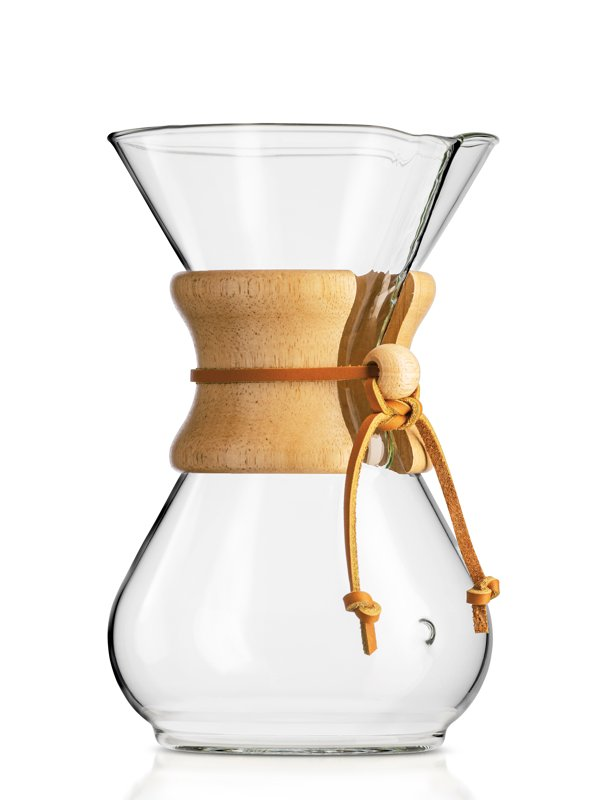

Gifts for Coffee Lovers: French Press vs. V60 vs. Chemex, Compared
Specs and details come from the manufacturer and official pages listed under Sources. We have not hands-on tested these products or tours; nothing here is a personal review.
Manual brewers make good gifts because they are affordable, last for years and suit different routines. The main question is how many mugs at once and how hands-on the person wants to be.
Quick comparison
| French press (Bodum Chambord 8-cup) | Pour-over cone (Hario V60 02) | Pour-over carafe (Chemex 6-cup) | |
|---|---|---|---|
| Stated capacity | 34 oz (Bodum 'cup' ≈ 4 oz) | 1–4 cups | 30 oz (Chemex 'cup' = 5 oz) |
| Filter | Built-in stainless plunger | Paper cone filters | Chemex Bonded filters |
| Material | Borosilicate glass, steel frame | Porcelain | Borosilicate glass, wood collar |
| Best fit | Several mugs, low fuss | One or two mugs, small footprint | Two to four mugs, pour-over ritual |
Specs from each maker's product page; see Sources below. 'Cup' sizes differ by brand, so compare ounces.
The picks
Bodum CHAMBORD 8-Cup (34 oz) French Press
Best for: brewing several mugs at once for a household or guests
- 34 oz (1.0 L) capacity; Bodum counts a 'cup' as about 4 oz
- Borosilicate glass carafe in a stainless-steel frame and lid (Bodum chrome-plates the classic chrome version; the 8-cup size is also sold in other finishes such as gold and copper)
- Stainless plunger/filter, so no paper filters are needed
- Bodum's brew guide: one rounded scoop of coarse coffee per 4 oz, water just off the boil (92–96°C), steep 4 minutes
Specs per: Bodum product page (1928-16US4); Bodum product page (1928-17, gold) (accessed 2026-10-27).
Hario V60 Ceramic Coffee Dripper, size 02
Best for: a one-to-two-mug pour-over setup that takes almost no counter space
- Brews 1–4 cups, per Hario
- Porcelain, made in Japan
- About 140 x 120 x 102 mm (W x D x H)
- Uses cone paper filters (sold separately unless a kit says otherwise)
Specs per: Hario global product page (accessed 2026-10-27).
CHEMEX Classic 6-Cup Pour-Over Coffeemaker (CM-6A)

Best for: pour-over for 2–4 people with a design-object look
- 30 oz capacity; CHEMEX measures a cup as 5 oz
- Borosilicate glass with a polished wood collar and leather tie
- About 8.5 in tall and 5 1/8 in in diameter
- Designed for CHEMEX Bonded filters; CHEMEX says the glass is dishwasher safe once the collar and tie are removed
Specs per: CHEMEX product page (accessed 2026-10-27).
Make it a kit
A brewer plus filters (if needed) and whole beans from a local roaster is a complete gift. If the recipient doesn't own a grinder, ask the roaster to grind for the method: coarse for French press, medium-fine for cone pour-over.
FAQ
- Which is easier for a beginner, French press or pour-over?
- A French press has fewer steps: add grounds and water, wait about 4 minutes (Bodum's guide), press and pour. Pour-over involves controlling the pour.
- Why do coffee makers list different cup sizes?
- Brands define a 'cup' differently. Bodum uses about 4 oz and Chemex uses 5 oz, so compare total ounces.
Sources
- Bodum CHAMBORD 8-Cup (34 oz) French Press: Bodum product page (1928-16US4) (accessed 2026-10-27)
- Bodum CHAMBORD 8-Cup (34 oz) French Press: Bodum product page (1928-17, gold) (accessed 2026-10-27)
- Hario V60 Ceramic Coffee Dripper, size 02: Hario global product page (accessed 2026-10-27)
- CHEMEX Classic 6-Cup Pour-Over Coffeemaker (CM-6A): CHEMEX product page (accessed 2026-10-27)
Prices aren't listed because they change often; check the current price with the retailer before buying. Spotted an error? See the contact details on our About page.